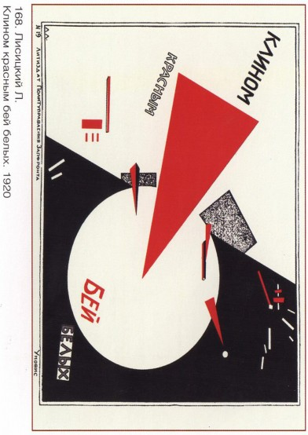
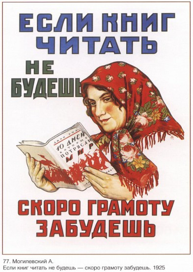
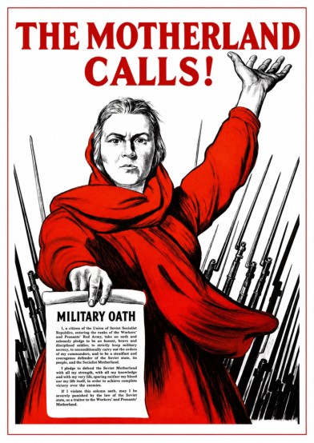
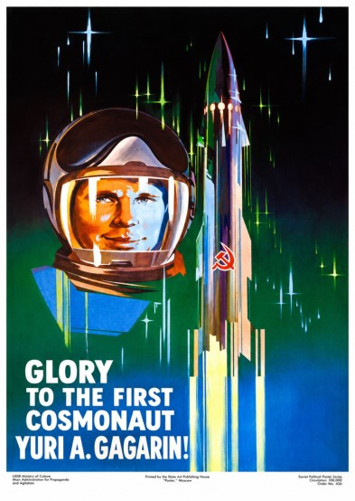

Soviet posters were used for much more than political portraits. They recruited soldiers, advertised films, encouraged reading, promoted factory work and celebrated space travel.
This timeline summarises the main periods described in COMRADE Gallery’s The Definitive History of the Soviet Propaganda Poster. [1] The dates group broad changes; styles overlapped rather than changing all at once.
1917–1921
Revolution and civil war
After the 1917 revolution, posters helped spread political messages quickly. ROSTA “windows” displayed illustrated news and slogans in shop windows. Artists also developed a new visual language of triangles, circles and bold text, as seen in El Lissitzky’s Beat the Whites with the Red Wedge.
- Main types
- Recruitment, political messages and illustrated news.
- Visual style
- Strong red and black, simple figures, large lettering and direct appeals to the viewer. Some designs used cartoons; others used shapes instead of realistic scenes.

1921–1927
Advertising, cinema and experiment
Under the New Economic Policy, limited private trade returned. Posters promoted films, books and goods alongside political ideas. Designers such as Alexander Rodchenko and the Stenberg brothers used unusual viewpoints and striking arrangements to catch attention.
- Main types
- Film posters, book advertisements and commercial promotions.
- Visual style
- Angled layouts, large letters and photomontage: photographs cut up and combined with drawings or text.

1928–1940
Industry and Socialist Realism
The Five-Year Plans shifted attention towards industrial production. During the 1930s, Socialist Realism became the official artistic approach. This meant recognisable people and settings shown in a positive, idealised way. Posters celebrated workers and farmers, while portraits of Stalin became increasingly prominent.
- Main types
- Factory targets, collective farming, workers and leadership.
- Visual style
- Large heroic figures, factories, machinery and scenes of an idealised future.
1941–1945
Wartime mobilisation
After Germany invaded the Soviet Union in 1941, posters called for defence of the country. Irakli Toidze’s The Motherland Calls! became a well-known example. Other designs mocked Nazi leaders, encouraged work for the war effort or marked the advance towards victory.
- Main types
- Recruitment, defence, sacrifice, enemy caricatures and victory.
- Visual style
- Urgent slogans, strong gestures and emotionally charged images of soldiers and civilians.

1946–1953
Rebuilding after the war
Post-war posters urged people to rebuild factories and cities and increase production. Images presented recovery as a shared national task. Stalin remained a central figure in official poster art during this period.
- Main types
- Reconstruction, production, victory and leadership.
- Visual style
- Confident workers, new buildings and optimistic scenes of recovery.
1953–1960s
The Thaw and the space age
After Stalin’s death, the period known as the Thaw allowed more room for artistic variety. Space achievements became major subjects. Posters celebrating Sputnik and Yuri Gagarin combined scientific imagery with messages of national achievement.
- Main types
- Science, space exploration, education and international friendship.
- Visual style
- Brighter colours, more varied layouts and, in space posters, rockets, stars and sweeping lines.

1970s–1984
Peace, work and everyday campaigns
Posters continued to promote work, celebrate public occasions and present Soviet positions on international affairs. Peace and disarmament were recurring subjects. The period did not have one single look: detailed painted scenes appeared alongside more graphic designs.
- Main types
- Disarmament, international solidarity, public holidays and social roles.
- Visual style
- Both realistic illustration and simpler symbols, often built around familiar slogans.
1985–1991
Reform and social criticism
Under Mikhail Gorbachev, glasnost (“openness”) and perestroika (“restructuring”) changed the subjects artists could address. Posters tackled issues such as alcohol abuse and drug addiction. As the Soviet Union approached its dissolution in 1991, official posters shared public space with a growing range of other political messages.
- Main types
- Anti-alcohol campaigns, public problems, reform and political debate.
- Visual style
- Visual jokes, satire and symbolic images that could question rather than simply celebrate.
Reference
Source and image credits
- COMRADE Gallery, The Definitive History of the Soviet Propaganda Poster. This short overview is based on the article text supplied for editorial review, with the wording simplified and the discussion limited to 1917–1991.
Images: Reproductions extracted from the supplied soviet-posters-15-stickers-A4 PDFs: set 6 (geometric design), set 8 (literacy) and set 4, English edition (wartime and space designs). English text in these versions is an adaptation. The illustrations are sticker-sheet reproductions, not photographs of original archival prints.